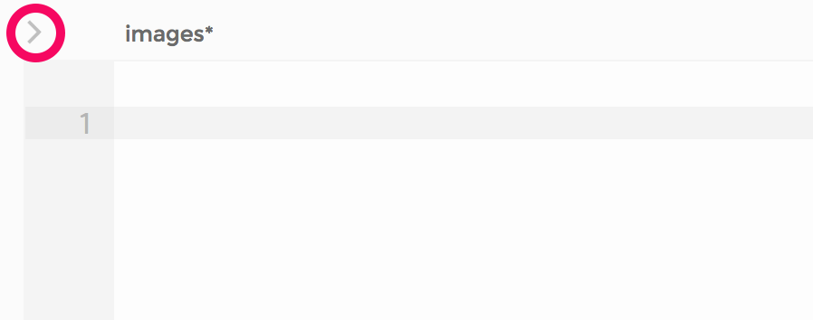
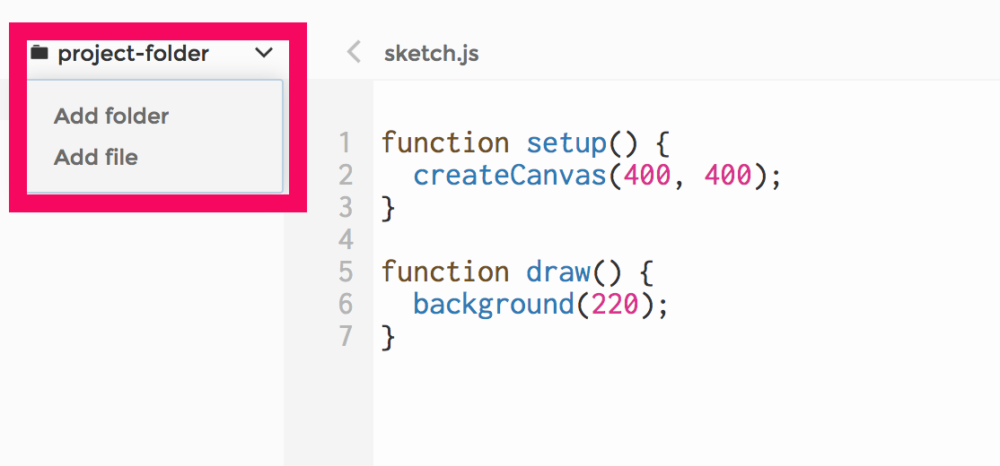
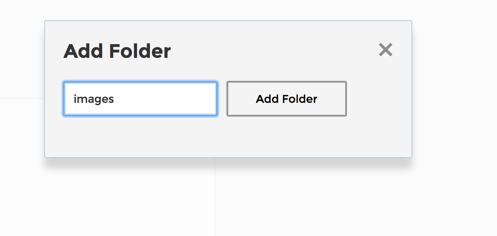
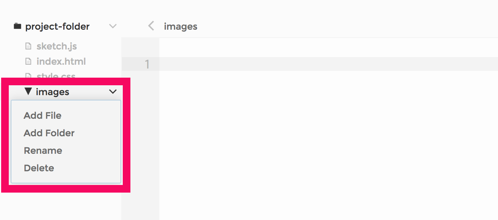
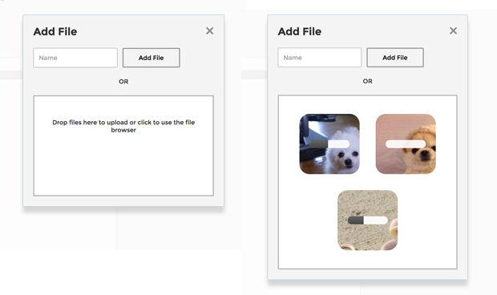
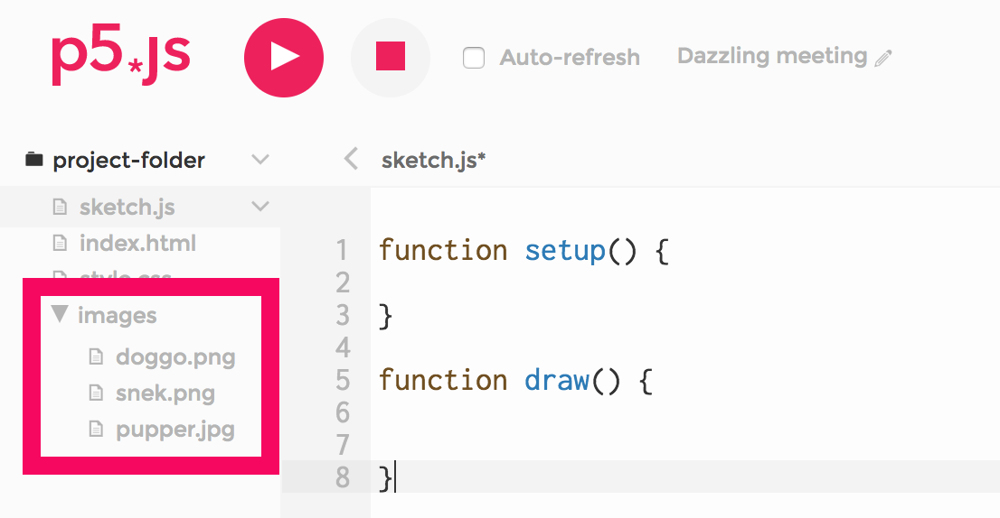

Description
In this learning activity students load, display and manipulate image files of different formats, changing their placement, size and tint color.
Description
In this learning activity students load, display and manipulate image files of different formats, changing their placement, size and tint color.
Teacher support Resources
Step by Step
In the last learning activity we loaded an image file in preload and then displayed it in draw. The code looked like this:
In order to try these examples yourself, you will need to include your images in your sketch folder. If you are using p5's online editor, here are the steps to do so:
1. To reveal your sketch's files and folders, click on the arrow to the left of the editor window. This will reveal a side panel.  2. Click on the arrow by your project folder and click "Add folder". Add a folder called "media", or "images".   3. Click on the arrow by your newly created folder, and then on "Add file".  Drag your image files to the "Add file" window.  Once they are uploaded, you will see their file names in your images folder:  Because the path to your images on the editor is different from the path to our images on this web page, you will need to do a slight change to the code, replacing "../../media/pupper.jpg" with "images/pupper.jpg". This applies to all examples that load media files.
The second and third parameters of the image function set its position on the canvas. In the sketch below, instead of drawing our image at the canvas origin as above, we are drawing it at (x,y) = (40, 40). We also add a third and fourth parameters to image, setting the image's width and height to the mouse position (move the mouse around the sketch to see the effect).
Before the call to image, we call the tint function. Tint causes the image to be drawn with a color fill, defined by RGB or HSB values depending on the current colorMode. Adding a fourth parameter for the alpha channel we could make the image transparent. In the example below the tint color is set to a random hue each time the user clicks (but is always bright and saturated).
p5 suppports different image formats. Below, we display GIF, PNG and SVG images ––all of which support transparency.
Find some images online, take some photos, make some drawings, and combine them into a p5 collage. Have their tint, size or position change in response to user actions such as typing, moving, or clicking the mouse.
We have used the random() function before to set colors, sizes, and positions of elements. Now let's have our program pick a random dog image for us, from a collection that we put together.
To accomplish this we will use a new type of variable that holds a series of elements: the array.
Arrays are declared like any other variable, with the keyword var followed by the name of the variable. We will use ours to hold the names of the files in our dog image collection, so this seems to be a good name: var possible_dog_images;.
We can initialize an array by listing its elements, separating them with commas, and enclosing this list with brackets like so: possible_dog_images = ["pupper.jpg", "doggo.gif"];
Each individual element can be accessed by its position: possible_dog_images[1] will return "doggo.gif", because array positions are counted starting from 0.
Take a look at the following code:
In the example above, we pick a random number between 0 and the number of elements in our array, which we can access like so: possible_dog_images.length. After rounding it down to a whole number using floor(), we save this random number in the pos variable. possible_dog_images[pos] resolves to a random image name from our collection. If you refresh this page several times, you will see that it sometimes selects "doggo.gif", and sometimes "pupper.jpg".
Can you modify this program so that it picks a random graphic symbol each time it runs? Instead of the heart, it might load a star, a speech bubble, an exclamation mark.